TheBox
Using insights procured from cultural probes to formulate a product that forces users to come to terms with their social media personas.
Problem: How may we use cultural probes to generate thoughtful insights? Furthermore, how may these insights help us ideate a hypothetical, absurdist product that engenders conversations about certain societal topics?
Solution: People tend to justify their excessive use of photo-based social media (ie. Instagram) with the phrase "a picture is worth a thousand words." Thus, an Instagram account with 50 photos must be worth 50,000 words, painting a deep and intimate picture of the person behind the social media account. However, the heavy photo-editing that goes into Instagram posts seems to refute this and insinuate a lack of genuinity. TheBox aims to illustrate this phenomenon by condensing one's social media persona, supposedly worth thousands of words, into five simple objects that can be placed in a nondescript box, outlining the deeper topics of virtual identity and online personas.
Method: We began by conducting two cultural probes on Instagram-users at UC Berkeley. In our first probe, we gave subjects a previously-unseen photograph and asked them to provide a written, journal-like response to the photo and the reactions it evoked. In our second probe, we asked our subjects to choose a random photo from their own photo library, edit it as though they were going to post on social media, and provide reasoning as to why they made certain edits.
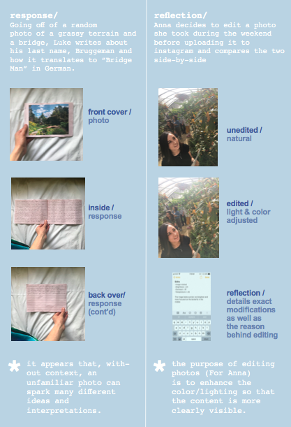We took the probes we each indivually conducted and generated various valuable insights. Then, we took these insights, compared them with one another, and categorized them based on topic.
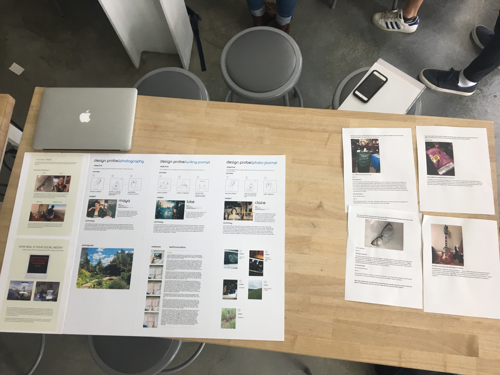Based on the various categories and the insights they contained, we ideated several design concepts that addressed topics like photo-editing, filters, and social media personas. Ideas included an auto-editor that adjust lighting, saturation, etc. on a photograph to make it more "desirable" as well as a social media platform with photo-based comments rather than text-based ones.
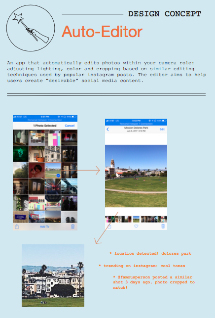 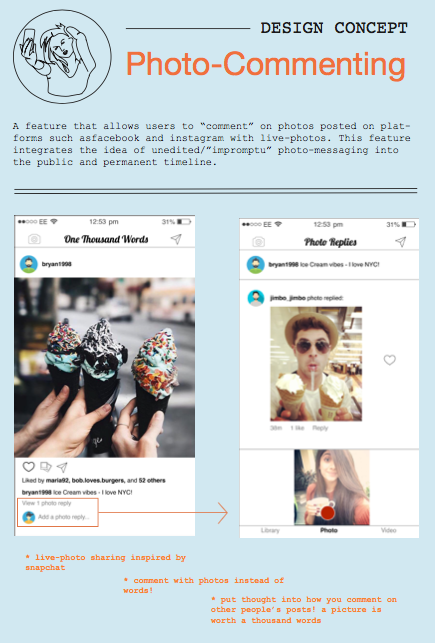Ultimately, we decided on a design concept like theBox because while it was definitely more of a hypothetical product, it afforded us an opportunity to generate conversation regarding virtual communities, online identities, and social media personas through the medium of an absurdist object.
Implementation: TheBox is a service that will take your Instagram photos, run them through a reverse image search, and generate a list of corresponding nouns. Then, it will send this list to your social media "friends" and ask them to choose the top five nouns that exemplifies you the best. The five most popular nouns will then be sent, in physical form, to you in a nondescript box, effectively condensing your social media presence and the persona you have created for yourself into five things.
 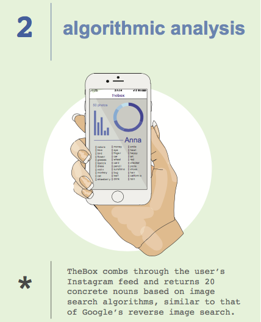
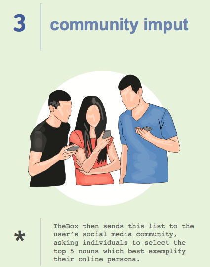
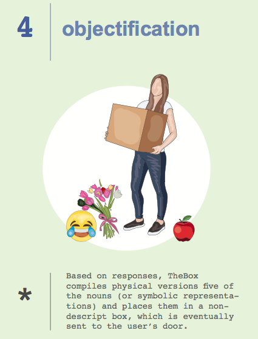
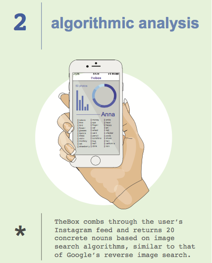
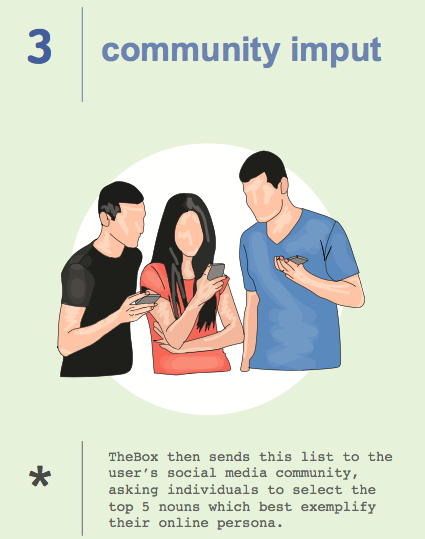
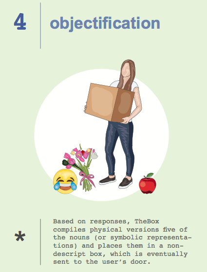
We prototyped the process on my own Instagram account. We used a Google reverse image search API to perform the object-generation on my photographs, and I sent out a survey to people on various social media platforms (Facebook, Instagram, Snapchat, etc.) asking people to choose five nouns that they felt exemplified me the most. I took the top five nouns and either bought the objects when they were easily-accessible or lasercut a small, miniature representation.
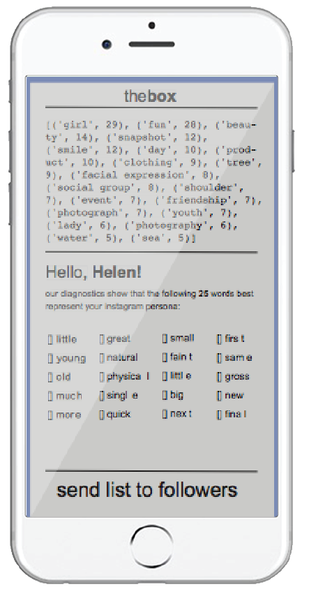 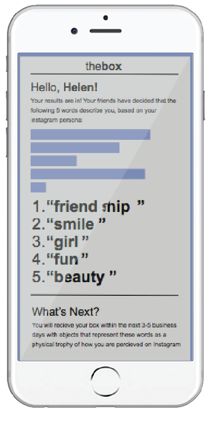 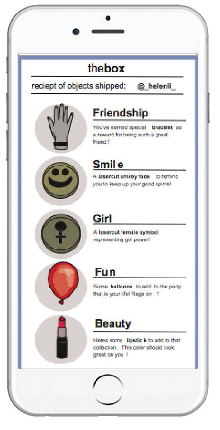Conclusion: We presented our final project at the Jacobs Hall Spring 2018 Design Showcase to students and faculty, where we also provided the final box of items generated when prototyping with my own personal Instagram account. Our project was lauded for its innovative approach to such an open-ended prompt and our risky decision to create a hypothetical, absurdist product.